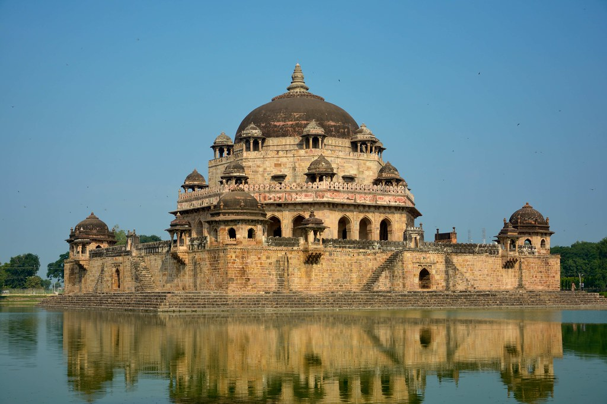
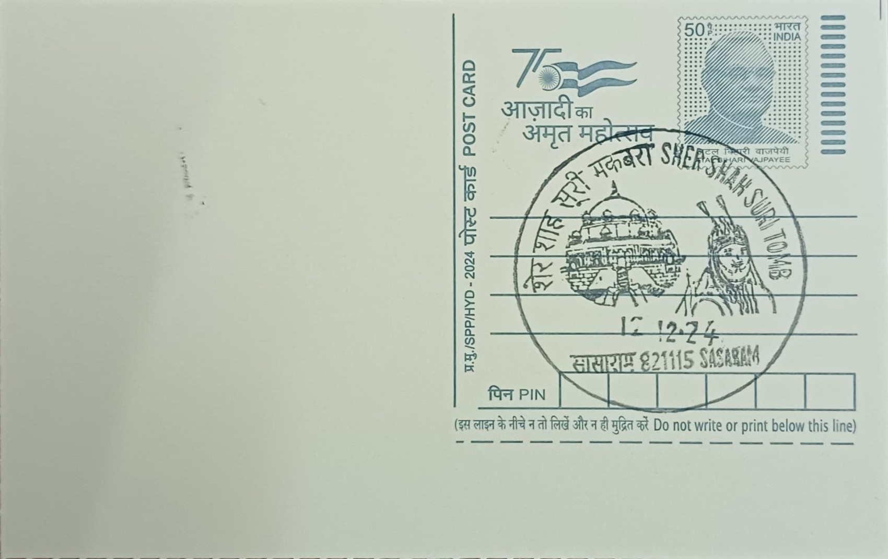

The mausoleum at Sasaram was raised for Sher Shah Suri, the Afghan noble born Farid Khan who rose through service under the Lodi and Mughal establishments before defeating Humayun at Chausa and Kanauj to found the Sur Empire in 1540. Sasaram, in present-day Rohtas district of Bihar, was the ancestral seat of his family, and it was here that Sher Shah chose to be commemorated after his death at Kalinjar in 1545, reportedly from an accidental explosion of gunpowder stores during a siege. The tomb he commissioned for himself was completed within months of his death by his son and successor Islam Shah Sur, making it both a personal memorial and a dynastic statement from an empire that would itself prove short-lived.
The monument is counted among the foremost examples of Indo-Islamic mausoleum architecture in the subcontinent and is protected as a monument of national importance by the Archaeological Survey of India. Its significance rests less on any single religious function than on its architectural position: scholars regard it as a transitional work bridging the Lodi-era tomb tradition of Delhi and the later imperial Mughal style, with its octagonal plan and proportions widely cited as a direct architectural precursor to Humayun's Tomb and, eventually, the Taj Mahal. It is often described as the finest surviving specimen of Sur-period building and is associated with the broader governance legacy of Sher Shah, whose currency, road, and postal reforms are frequently invoked alongside the monument in historical accounts of the period.
Constructed of sandstone between roughly 1540 and 1545 under the direction of the architect Mir Muhammad Alawal Khan, the tomb rises about 122 feet (37 metres) on a square plinth set at the centre of a large artificial lake covering close to 22 acres, with stone embankments and stepped ghats descending into the water on each side. The mausoleum itself is reached by a causeway and stands on a tall podium deliberately angled within the square base so that the chamber inside aligns correctly with the qibla toward Mecca. Above the octagonal main body rises a massive central dome flanked by chhatris and arcaded verandahs, a combination of Lodi-period octagonal tomb form with a scale and command of the lake setting that had not been attempted before in the region.
A particularly distinctive feature of the complex is its jal mahal, or water-palace, setting, a building typology more commonly associated with Rajput and later Mughal pleasure pavilions than with funerary architecture, here adapted to give Sher Shah's tomb the appearance of rising directly out of the lake when viewed from the town. The tank itself has also been the subject of concern in recent decades: conservators and Archaeological Survey of India officials have repeatedly flagged the degraded, acidic state of the lake water, worsened by idol immersion and inadequate drainage, as a threat to the sandstone foundations and embankments, with a fragment reported to have fallen from the dome area in recent years. The structure underwent an early documented restoration under J. D. Beglar in 1882-83, which helped stabilise elements of the masonry that had weathered over three centuries.
The tomb today remains under the custodianship of the Archaeological Survey of India, which maintains it as a centrally protected monument and has at various points pressed state authorities in Bihar to fund desilting and cleaning of the surrounding lake and to restrict new construction within its immediate vicinity; the site has also figured in discussions around India's tentative list for UNESCO World Heritage recognition. It continues to draw visitors to Sasaram as the town's principal historical landmark, standing alongside smaller nearby tombs of Sher Shah's father Hasan Khan Sur and his successor Islam Shah Sur, with the three monuments together forming the core of the town's surviving Sur-era architectural ensemble.
| Date of Introduction | October 8, 2024 |
|---|---|
| Address | Senior Postmaster, |
| Sasaram HO, | |
| Rohtas (dt.), Bihar - 821115. |